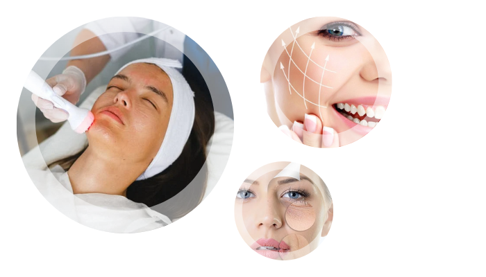
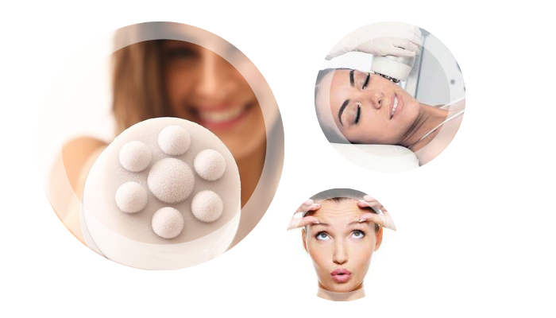
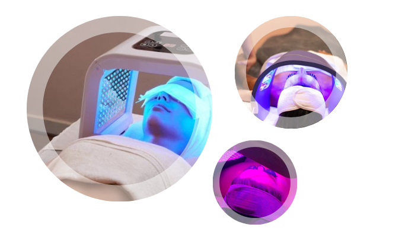
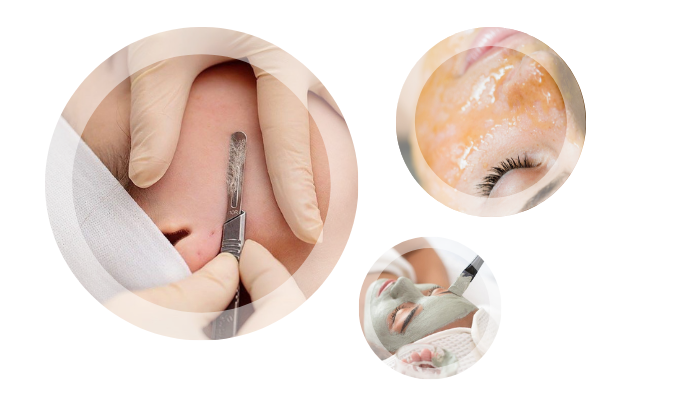

Radiofrecuencia facial
La radiofrecuencia facial consiste en aplicar ondas electromagnéticas de alta frecuencia sobre la cara, que llegan hasta las capas más profundas de la piel. Por lo tanto, es un tratamiento que “sanea” la piel desde dentro hacia fuera, estimulando la producción de colágeno. Los resultados de esta técnica son excelentes: la apariencia general de la piel del rostro mejora muchísimo.
Al trabajar desde las capas más profundas de la piel hacia el exterior consigue estimular la producción de colágeno de forma 100% natural. De esta manera, consigue que la piel se vuelva más firme y flexible. Esto, además, previene los primeros signos de envejecimiento en la cara, como las arrugas y las líneas de expresión.
Este tratamiento estimula en gran medida la circulación sanguínea, así que uno de sus principales beneficios es que la piel se ve sana y luminosa, con un aspecto joven.
CrioHimfu
La CrioFrecuencia es una terapia segura y no invasiva que combina la transmisión de frío (-25°c) desde el cabezal a la dermis, provocando un calentamiento interno de los tejidos corporales (más de 55°c) causado por las ondas de radiofrecuencia multipolar.
Esta combinación de frío y calor causa un shock térmico que estimula la síntesis de nuevas fibras de colágeno y elastina produciendo un efecto lifting instantáneo, progresivo y de larga duración en una sola sesión.
Fototerapia
La fototerapia consiste en el tratamiento de diferentes enfermedades de la piel mediante la radiación ultravioleta, que tiene principalmente una acción antiinflamatoria. Concretamente, la fototerapia hace uso de una luz LED de diferentes longitudes de onda y distintos colores para tratar problemas de la piel.
Dermaplaning
El Dermaplaning es un método de exfoliación físico que consiste en utilizar un bisturí de calibre 10 para raspar suavemente la capa superior de la piel constituida por células muertas, con el fin de revelar una tez más brillante y suave. Elimina todas las células muertas de la piel y también el vello facial, dejando la superficie muy suave, también permite una mayor penetración de los productos para la piel y crea un lienzo perfecto para que el maquillaje se deslice suavemente.
Crioiontoforesis
.png)
Se trata de un método que permite aplicar ciertos productos cosméticos en la piel a través de iones. Se aprovechan así las propiedades que tiene la corriente galvánica para introducir productos cosméticos cuyos principios activos son susceptibles de ser disociados mediante iones.